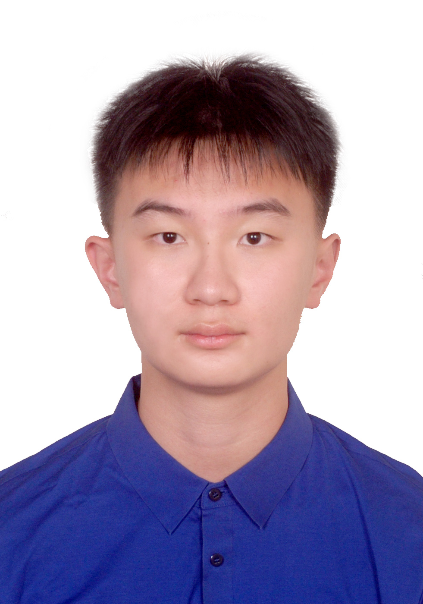

<div class="middle center"> <div style="width: 100%"> <img src="graph/logo.png" style="margin-bottom: 1em; height: 80px;"> # 本博贯通经验分享 <hr/> <p style="font-size:0.9em; color:#555; text-align:center;">科研 · 项目 · 课程 · 价值</p> By 混合2207 杜宗泽 <div style="text-align: right; margin-top: 1em;"> <p>2026.04 </p> </div> </div> </div> <!--s--> <div class="middle center"> <div style="width: 100%"> # 自我介绍 </div> </div> <!--v--> ## 杜宗泽 <div class="profile-wrap"> <div class="profile-photo"> <p></p> </div> <div class="profile-info"> <div class="profile-section"> <span class="profile-section-title">教育</span> 浙江大学 竺可桢荣誉学院混合班 2022 级<br> 准博士生 · 导师：沈春华 / 陈昊教授 </div> <div class="profile-section"> <span class="profile-section-title">研究方向</span> 多模态推理 · 具身智能 · 视频生成 </div> <div class="profile-section"> <span class="profile-section-title">论文</span> - Omni-R1 <span class="tag">NeurIPS 2025</span> - LivingSwap <span class="tag">CVPR 2026</span> </div> <div class="profile-section"> <span class="profile-section-title">项目 & 荣誉</span> - AIRA 人工智能研究协会 创始人 - ZJUSCT · ASC ISC二等奖 23-25 </div> </div> </div> <!--s--> <div class="middle center"> <div style="width: 100%"> # Part 1 | 价值导向 ### 人生的意义，投资自己 </div> </div> <!--v--> ## Connecting the Dots > 这个时代，人们是早熟的：这件事有没有用？值不值得做？ <br> - 当下看起来"没用"的事，回头才发现是最重要的那个点 - 点和点的连线，只有站在未来才看得见 - **"吃亏是福"** —— 你以为在亏，其实在积累 <br> <div class="big-quote"> 「You can't connect the dots looking forward;<br>you can only connect them looking backwards.」<br> <span style="font-size:0.7em; font-weight:400;">— Steve Jobs</span> </div> <!--v--> ## Love and Loss — 找到你热爱的 <br> <div class="card-row"> <div class="card"> <span class="card-title">内卷的本质</span> 资源分配不均带来的焦虑。大家挤在同一赛道，因为那里资源最集中。 </div> <div class="card"> <span class="card-title">但那真的是你要的吗？</span> 热爱不是一夜之间的顿悟——是在一个个经历里,慢慢感受出来的。 </div> <div class="card"> <span class="card-title">怎么找到热爱</span> 不是提前想清楚，而是去经历、去感受。做得多了，自然会知道。 </div> </div> <br> > 你那个"愿意免费去做的事"，就是值得投资的地方 <!--v--> ## Death — 坚守本心 <br> <div class="big-quote"> 死亡是每个人绕不开的终极命题<br> <span style="font-size:0.72em; font-weight:400; color:#555;">它没有答案，但它有一个用处</span> </div> <br> - 让你想清楚，**什么是真正重要的** - 当站在终点回头看，那些因外部压力做的选择——值得吗？ - 不要因为别人的声音，活成别人的样子 <br> > 人生最贵的投资，是投资自己 <!--s--> <div class="middle center"> <div style="width: 100%"> # Part 2 | 本博贯通 ### 为什么选择读博士 </div> </div> <!--v--> ## 本博贯通意味着什么 > 是一种快速通道的途径 - 你无须花过的的精力，在一些繁琐的课程学习上，可以面向研究本生，进入到下一个阶段 - `every coin has two sides`，诚然会锁死你的未来；所以我会想说在接下来的这段时间里，大家可以更好的去感受，知道自己喜欢什么样的研究，喜欢什么样的导师，喜欢什么样的环境 - 在这个过程中，如果你觉得不适合了，随时调整，不要计较沉没成本 <br> > 为什么是你？为什么是现在？ <!--v--> ## 为什么读博士 <!-- 这里写你自己的内容 --> <!--s--> <div class="middle center"> <div style="width: 100%"> # Part 3 | 如何科研 ### 用好工具，跟好时代 </div> </div> <!--v--> ## 科研方法论 > 先别问"研究什么"，先问"怎么做科研" <div class="step-grid"> <div class="step-box"> <span class="step-num">读</span> <span class="step-name">找到核心问题</span> <span class="step-desc">读 survey、读经典论文<br>理清领域脉络</span> </div> <div class="step-box"> <span class="step-num">想</span> <span class="step-name">提出自己的观点</span> <span class="step-desc">哪怕很小的 idea<br>先有自己的判断</span> </div> <div class="step-box"> <span class="step-num">做</span> <span class="step-name">迭代实验</span> <span class="step-desc">复现 baseline<br>一步一步改进</span> </div> <div class="step-box"> <span class="step-num">写</span> <span class="step-name">清晰表达</span> <span class="step-desc">把做的事写出来<br>这是最难的一步</span> </div> </div> <!--v--> ## AI 工具链 <div class="card-row"> <div class="card"> <span class="card-title">读论文</span> - Semantic Scholar<br>找论文、理脉络 - Connected Papers<br>看引用关系图 - Claude / GPT<br>快速消化方法与难点 </div> <div class="card"> <span class="card-title">写代码</span> - Codex / Claude Code<br>辅助实现与 debug - Copilot<br>代码补全加速 - <br>让 AI 帮你加速，<br>不是帮你写 </div> <div class="card"> <span class="card-title">写论文</span> - Claude / GPT<br>润色英文表达 - Grammarly<br>语法检查 - <br>从中文思路到<br>英文论文的最佳搭档 </div> </div> <br> > 工具会用了，效率差距是 10 倍起 <!--v--> ## 几点建议 <br> <div class="card-row"> <div class="card"> <span class="card-title">选题</span> 从导师方向出发，找自己感兴趣的交叉点 </div> <div class="card"> <span class="card-title">跟导师</span> 主动汇报进展，不要等被问；有困难早说 </div> <div class="card"> <span class="card-title">论文节奏</span> 复现 → 改进 → 独立提 idea<br>一步一步来 </div> <div class="card"> <span class="card-title">别怕慢</span> 第一篇很难，（个人不建议自己独立完成），但之后会越来越成熟 </div> </div> <br> <!--s--> <div class="middle center"> <div style="width: 100%"> # 结语 </div> </div> <!--v--> ## 送给学弟学妹 <br> <div class="card-row" style="margin-bottom: 16px;"> <div class="card" style="text-align:center; border-color: var(--zju-blue);"> 不要太早算清楚<br>每件事的得失 </div> <div class="card" style="text-align:center; border-color: var(--zju-blue);"> 去经历，去感受<br>热爱会在经历里浮现 </div> <div class="card" style="text-align:center; border-color: var(--zju-blue);"> 跟好这个时代<br>用好手里的工具 </div> </div> <br> <div class="big-quote"> 投资自己，永远不会亏 </div> <div style="text-align: right; padding-right: 25px; margin-top: 10px;"> <span class="small-text">— 杜宗泽，2026.04</span> </div> <!--v--> ## 欢迎交流 <div style="display: flex; align-items: center; justify-content: center; gap: 40px; margin-top: 20px;"> <div style="text-align: center;"> <p style="font-size: 0.7em; color: #888; margin-top: 10px;">微信扫码添加</p> </div> <div style="text-align: left;"> <p style="font-size: 0.85em; color: #444; line-height: 1.8;"> 有任何问题，欢迎随时交流<br> 科研 · 创业 · 读博 · 什么都可以聊 </p> </div> </div>